O problema
Fase de acompanhamento, a conferencia diária por processo e cobranças de retorno dos processos.
Utilizamos um apps de Gestão, porém ainda existe gargalos em acompanhamentos dos prazo e cobranças de retornos nos processos.
Tempo: 1h diária para acompanhamento dos processo em tramitações; Risco: extemporaneidade de processos;
AS-IS · o processo antes do MVP
O caminho real, com quem faz, o que entra, onde espera e o que é automatizável. Fonte: tabela AS-IS do projeto.

Fluxograma AS-IS · amarelo: etapa manual; tracejado: ponto de espera. Os números correspondem à tabela. Fonte Mermaid.
| Etapa | Quem faz | Entra | Ação | Sai | Sistema | Regra | Onde espera | Tempo | Automatizável |
|---|---|---|---|---|---|---|---|---|---|
| Cadastro | Servidor que recebe o documento no sistema | Processo ou expediente eletronico | Lançamento no app | Processo formalizado e autuado | sistema app | Verificar se documentação mínima está completa para autuação | no app | Sim, com apoio humano | |
| Atribuição | Servidor que faz o cadastro | Processo sem andamento | Analisar o documento, elaborar despacho ou ofício para validação para autuação | Parecer, despacho ou ofício elaborado | Sistema app | Regra de distribuição por competência | no app | Sim, com apoio humano | |
| Tramitação e Instrução | Servidor responsável | Processo atribuído para análise | Analisar o feito, confeccionar despacho ou ofício | Despacho ou ofício validado | Sistema SIGA DOC | Verificar se o conteúdo do documento é administrativo ou jurídico | no app | Sim, com apoio humano | |
| Acompanhamento e Prazos | Sistema / Controle de Prazos | Processo aguardando resposta de ou lotação ou a validação da chefia imediata | Monitorar permanência, controlar prazos vigentes e cobrar pendências | Alertas de prazo e notificações de cobrança | Sistema app | Validação do transcurso do prazo regimental ou recebimento de resposta externa | no app, Aguardando resposta de órgãos externos/internos ou término do prazo | Sim, com apoio humano | |
| Conclusão | Servidor | Processo instruído e analisado | Tomar decisão final, assinar, tramitar para saída ou arquivar | Processo concluído, decisão emitida e feito arquivado | Sistema | alidação da instrução para deferimento/indeferimento e assinatura final | Fila da autoridade aguardando assinatura final ou processamento do arquivo | Sim, com apoio humano |
TO-BE · o processo com o MVP
O que muda em cada etapa, quem passa a fazer e o ganho esperado. Fonte: tabela TO-BE do projeto.
Fluxograma TO-BE · verde: máquina (automação local); azul: pessoa (fé pública). Fonte Mermaid.
Quando este processo existir, os servidores da lotação deixam de conferir manualmente os prazos na mesa virtual do Siga-Doc e passam a contar com a gestão de documentos integrada, monitoramento automatizado, alertas de prazos, notificações preditivas e geração automática de cobranças para processos pendentes de resposta.
A tabela TO-BE não veio no projeto.
O que o MVP entrega
Tela-assinatura: Caixa por perfil: a instruir, a revisar e a assinar.
Menu do MVP: PainelProcessosNovo processoConfiguração
Regras de negócio
| ID | Regra | Quando | Tipo | Exceção |
|---|---|---|---|---|
**RN01** | Se a solicitação não contiver todos os anexos obrigatórios cadastrados para o tipo de requisição, o envio é recusado. | Cadastro e Entrada de novas solicitações pelo requerente. | Validação | Nenhuma exceção. |
**RN02** | Se a solicitação for enviada com sucesso, o sistema deve gerar automaticamente um número único de autuação no formato `YYYY.NNNN-SD`. | Confirmação da autuação do expediente no Siga-Doc. | Cálculo | Nenhuma exceção. |
**RN03** | Apenas servidores ativos e vinculados à lotação de destino do processo podem alterar a atribuição do responsável técnico. | Módulo de Atribuição e Triagem da Mesa Virtual. | Validação | Administrador geral do sistema. |
**RN04** | Se o analista selecionar uma minuta padronizada, o sistema deve preencher automaticamente os campos cadastrais do processo no texto. | Tramitação e Instrução do processo (redação de pareceres/despachos). | Validação | Se o analista optar por criar um documento em texto livre sem template. |
**RN05** | Se o usuário for o requerente do processo, ele não pode ser atribuído como analista nem assinar como autoridade decisora no mesmo feito (Segregação de Funções - SoD). | Atribuição de responsável e Assinatura/Conclusão do processo. | Validação | Nenhuma exceção. |
**RN06** | Se o percentual de tempo decorrido atingir ou ultrapassar 70% do prazo limite, o indicador visual do processo na Mesa Virtual deve mudar para a cor Amarela. | Monitoramento e cálculo contínuo do cronômetro de prazos. | Cálculo | Processos com prazo suspenso ou já concluídos. |
**RN07** | Se o tempo decorrido atingir 100% do prazo limite sem a juntada da resposta exigida, o status do prazo deve ser alterado para 'Vencido' e o indicador deve mudar para a cor Vermelha. | Estouro do tempo limite do cronômetro regimental. | Cálculo | Processos com prazo suspenso por decisão motivada. |
**RN08** | Se o processo atingir o status 'Vencido' por pendência de terceiros, o sistema deve disparar automaticamente um e-mail/notificação de cobrança (*dunning*) ao destinatário registrado. | Momento exato da virada de status do prazo para 'Vencido'. | Cálculo | Se a opção de envio automático de cobrança for desativada manualmente pelo gestor da lotação. |
**RN09** | Se o despacho final não possuir uma assinatura digital válida do perfil Autoridade Decisora, o encerramento do processo é bloqueado. | Etapa de Conclusão e deliberação final do feito. | Cálculo | Nenhuma exceção. |
**RN10** | Se o processo for assinado e concluído pela Autoridade Decisora, o sistema deve disparar a notificação do resultado ao requerente e alterar o estado do feito para 'Arquivado'. | Conclusão e arquivamento final do processo. | Cálculo | Nenhuma exceção. |
Papéis
| Papel | Quem é | O que vê | O que faz | O que não faz | Registro |
|---|---|---|---|---|---|
Métricas do piloto
Como testar
O MVP é um `index.html` offline, com dados fictícios. Abra index.html.
cd Apps/gestao-documentos python construir.py python testes/testar.py python testes/cenarios.py python testes/jornada.py # Lightpanda (via WSL, CDP em 9222 e HTTP em 8000) python testes/jornada.py --cdp http://127.0.0.1:9222 --base http://127.0.0.1:8000
Documentos: PROJETO.md · sprint.md · README.md